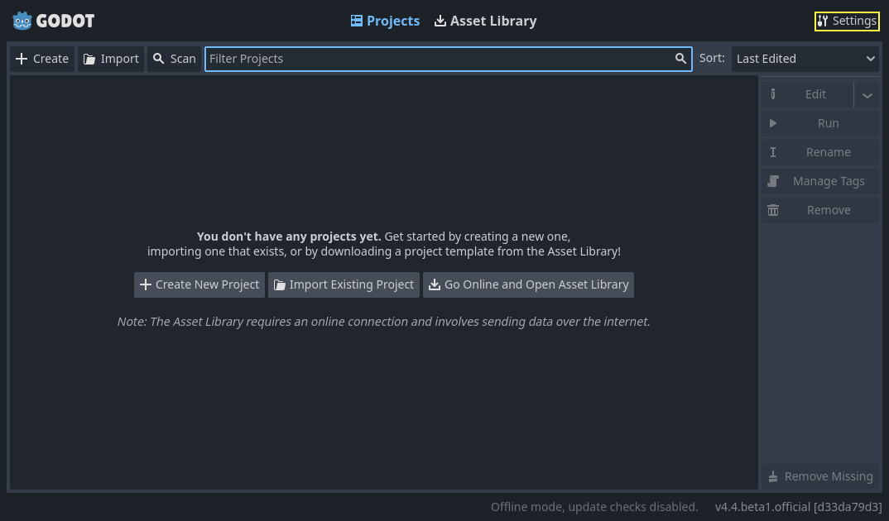
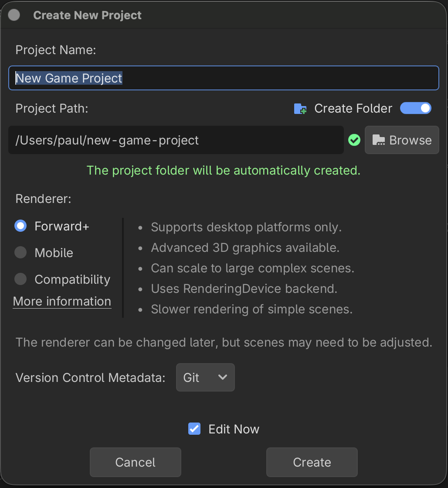

Programmering nivå 2 med Godot och GDScript
Kapitel 1: Från Programmering 1 till Godot-projekt
Det här kapitlet knyter ihop grunderna från Programmering 1 med arbetssättet i Godot och lägger den tekniska basen för hela kursen.
Innehållsförteckning
Hoppa direkt till det avsnitt du arbetar med.
Kapitelöversikt
I det här kapitlet börjar eleverna med att ladda ner och installera Godot på macOS. Därefter går kapitlet vidare till hur ett 2D-spel byggs upp av scener, noder, script och input. Målet är att snabbt komma igång med ett fungerande spel, samtidigt som eleverna tränar struktur, läsbar kod och problemlösning.
1.1 Ladda ner och installera Godot på macOS
Det första steget i kursen är att installera Godot så att du kan bygga och testa spel lokalt på din Mac.
Steg 1 - Ladda ner Godot
- Gå till Godots nedladdningssida för macOS.
- Välj den stabila versionen av Godot 4.
- Ladda ner den version som passar din dator (Apple Silicon eller Intel).
Steg 2 - Starta Godot
- Öppna den nedladdade filen.
- Flytta appen till Program-mappen.
- Starta Godot och bekräfta säkerhetsdialogen i macOS om den visas.
Steg 3 - Skapa första projektet
- När Godot startar öppnas Project Manager först.

- Välj fliken Projects om den inte redan är vald.
- Klicka på + Create.
- Skriv ett namn på projektet.
- Välj en mapp där projektet ska sparas.
- Välj renderer:
- I den här kursen: välj Forward+.
- Forward+ ger bäst grafik på desktop.
- Mobile är optimerad för svagare enheter.
- Compatibility fungerar bredast men med enklare rendering.

- Klicka på Create för att öppna projektet i editorn.
Steg 4 - Kontrollera att allt fungerar
- Skapa en tom 2D-scen.
- Spara scenen som main.tscn.
- Klicka på Run Project och kontrollera att projektfönstret öppnas.
Om projektet startar är miljön redo för resten av kapitlet.
1.2 Så fungerar 2D i Godot
2D i Godot bygger på scener och noder i ett träd där varje objekt har en tydlig roll. Den vanligaste basklassen är Node2D, som används för position, rotation och skala i ett platt spelrum.
Spelobjekt visas ofta med Sprite2D eller AnimatedSprite2D, medan beteendet styrs av ett script. Det betyder att grafiken och logiken kan hållas isär, vilket gör spelet lättare att förstå och utveckla.
Input från tangentbord, mus eller handkontroll översätts till rörelse, hopp, attack eller andra handlingar. Kollisioner och fysik används för att avgöra när objekt träffar varandra eller samspelar i spelvärlden.
UI hålls separat från spelvärlden så att menyer, poäng och liv blir tydliga för spelaren. I 2D är poängen att eleverna lär sig scenstruktur, koordinater, rörelse och kollisioner innan de går vidare till mer komplexa miljöer.
1.3 Scener, noder och script
I Godot är scenen den grundläggande byggstenen. En scen kan vara allt från en spelare till en meny eller en hel bana. Scenen innehåller noder, och varje nod har en uppgift.
Scriptet kopplas till en nod och innehåller beteendet. Det är här eleverna skriver GDScript för att styra rörelse, indata, kollisioner och spelregler.
- Scen: en återanvändbar byggdel i spelet.
- Nod: ett objekt i scenens hierarki.
- Script: koden som får objektet att göra något.
1.4 Input, rörelse och spelkontroll
För att ett spel ska kännas levande måste spelaren kunna påverka det. Därför kopplas input till rörelse och handlingar. I ett första 2D-spel räcker det ofta att spelaren kan röra sig åt fyra håll, hoppa eller samla objekt.
Det viktiga är att eleverna förstår sambandet mellan indata och resultat. När en tangent trycks ner ska något hända i spelet, och koden ska vara tydlig nog för att det ska gå att ändra senare.
extends CharacterBody2D
@export var speed: float = 220.0
func _physics_process(delta):
var direction = Input.get_vector("ui_left", "ui_right", "ui_up", "ui_down")
velocity = direction * speed
move_and_slide()1.5 Kollisioner, mål och spelregler
När spelaren kan röra sig är nästa steg att lägga till något att göra. Det kan vara att samla mynt, nå en dörr, undvika hinder eller besegra en fiende.
Kollisioner gör att spelet kan upptäcka när spelaren träffar något. Då kan spelet ge poäng, avsluta nivån, spela upp en effekt eller starta ett nytt läge.
Redan här ska eleverna se att spelregler inte bara handlar om grafik, utan om hur objekt reagerar på varandra.
1.6 Första kodexemplet i GDScript
Det här är ett enkelt exempel på hur ett spelobjekt kan styras i Godot. Koden är liten, men den visar redan flera viktiga delar: variabel, input, rörelse och en tydlig struktur.
extends Area2D
@export var move_speed: float = 180.0
func _process(delta):
var movement = Vector2.ZERO
if Input.is_action_pressed("ui_right"):
movement.x += 1
if Input.is_action_pressed("ui_left"):
movement.x -= 1
if Input.is_action_pressed("ui_down"):
movement.y += 1
if Input.is_action_pressed("ui_up"):
movement.y -= 1
position += movement.normalized() * move_speed * deltaEleverna ska inte bara kopiera koden, utan också förstå varför den fungerar. Det är först när de kan förklara varje rad som de har tagit ett verkligt steg framåt.
1.7 Övningar och utmaning
- Skapa en spelare som kan röra sig åt fyra håll.
- Lägg till ett objekt som spelaren kan samla.
- Skapa ett enkelt mål eller en dörr som avslutar nivån.
- Skriv om koden så att den blir tydligare och lättare att återanvända.
E-nivå: följ en mall och få spelet att fungera.
C-nivå: anpassa rörelse, struktur och spelregler samt förklara dina val.
A-nivå: utveckla en egen variant inom samma ram och motivera tekniska val självständigt.
1.8 Reflektion och nästa steg
När kapitlet är klart ska eleverna kunna svara på tre frågor: Vad är en scen? Vad är en nod? Hur kopplas input till rörelse i ett 2D-spel?
Om de kan förklara det och samtidigt få ett enkelt spel att fungera, då är grunden lagd för resten av kursen.
Nästa kapitel bygger vidare med objektorienterad programmering i GDScript.